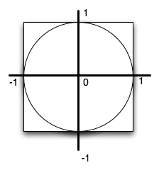

Approximating the Value of Pi¶
Almost everyone has heard of the famous mathematical constant called Pi. We use it most often to find the circumference or the area of a circle. For simplicity, the value that is commonly used for pi is 3.14. However, it turns out that pi is what mathematicians call an irrational number, meaning that that it has an infinite, nonrepeating number of decimal digits. The value is
3.1415926535897932384626433832795028841971693993751058209749445923078164062…
In this lab, we will approximate the value of pi using a technique known as Monte Carlo Simulation. This means that we will use random numbers to simulate a “game of chance”. The result of this game will be an approximation for pi.
Setup¶
The game that we will use for this simulation is “darts”. We will “randomly” throw a number of darts at a specially configured dartboard. The set up for our board is shown below. In the figure, you can see that we have a round dartboard mounted on a square piece of wood. The dartboard has a radius of one unit. The piece of wood is exactly two units square so that the round board fits perfectly inside the square.
But how will this help us to approximate pi? Consider the area of the circular dartboard. It has a radius of one so its area is pi. The area of the square piece of wood is 4 (2 x 2). The ratio of the area of the circle to the area of the square is pi/4. If we throw a whole bunch of darts and let them randomly land on the square piece of wood, some will also land on the dartboard. The number of darts that land on the dartboard, divided by the number that we throw total, will be in the ratio described above (pi/4). Multiply by 4 and we have pi.
Throwing Darts¶
Now that we have our dartboard setup, we can throw darts. We will assume that we are good enough at throwing darts that we always hit the wood. However, sometimes the darts will hit the dartboard and sometimes they will miss.
Inorder to simulate throwing the darts, we can generate two random numbers between zero and one. The first will be the “x coordinate” of the dart and the second will be the “y coordinate”. However, we have a problem. The coordinates for the dartboard go from -1 to 1.
How can we turn a random number between 0 to 1 into a random number between -1 and 1?
The program has been started for you. You need to fill in the part that will “throw the dart”. Once you know the x,y coordinate, have the turtle move to that location and make a dot. Note that the tail is already up so it will not leave a line.
Counting Darts¶
We already know the total number of darts being thrown. The variable numdarts keeps this for us. What we need to figure out is how many darts land in the circle? Since the circle is centered at (0,0) and it has a radius of 1, the question is really simply a matter of checking to see whether the dart has landed within 1 unit of the center. Luckily, there is a turtle method called distance that will return the distance from the turtle to any other position. It needs the x,y for the other position.
For example, fred.distance(12,5) would return the distance from fred’s current position to position (12,5).
Now we simply need to use this method in a conditional to ask whether fred is within 1 unit from the center. If so, color the dart red, otherwise, color it blue. Also, if we find that it is in the circle, count it. Create an accumulator variable, call it insideCount, initialize it to zero, and then increment it when necessary. Remember that the increment is a form of the accumulator pattern using reassignment.
The Value of Pi¶
After the loop has completed and visualization has been drawn, we still need to actually compute pi and print it. Use the relationship given above.
Run your program with larger values of numdarts to see if the approximation gets better. If you want to speed things up for large values of numdarts, set the tracer to be 100 using wn.tracer(100).